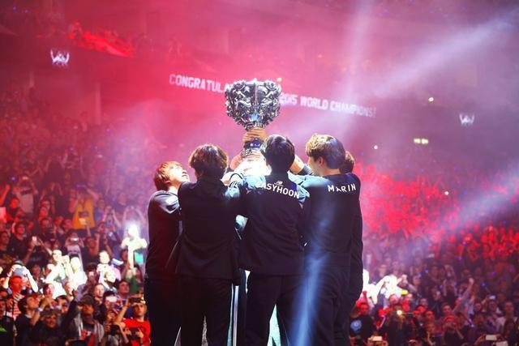

s5

Faker，本名李相赫，是《英雄联盟》电竞领域的传奇人物。他于1996年5月7日出生于韩国首尔，成长于一个单亲家庭。由于家庭因素，Faker小时候不太善于与人交流，但自幼就展现出了出色的自学能力。他最初接触电脑游戏是魔兽争霸，后来在15岁时开始玩《英雄联盟》，并以ID“GoJeonPa”在韩服打匹配。随着技能的提升，他开始参加排位赛，并迅速成为韩服路人王。2012年，Faker以超过2500分的等级分登顶韩服，这引起了多家韩国俱乐部的注意，其中就包括SKT战队。2013年，16岁的Faker正式加入SKT，开始了他的职业电竞生涯。在SKT的首秀中，他用豹女完成了职业生涯的第一次击杀，并在OGN总决赛中以惊人的表现声名鹊起，特别是他在“双劫之战”中使用劫的表现，成为了《英雄联盟》历史上的经典之一。同年，他还帮助SKT赢得了世界总决赛的冠军，这是他职业生涯的第一个世界冠军。
Faker的职业生涯充满荣誉与传奇，但也经历了低谷期。在2014年S4赛季，SKT遭遇挫折，失去了总决赛的参赛资格。然而，他很快从低谷中恢复，并在接下来的几年中继续书写着自己的传奇。2015年和2016年，他分别帮助SKT再次赢得世界总决赛冠军，成为三冠王。Faker的职业生涯充满荣誉与传奇，但也经历了低谷期。在2014年S4赛季，SKT遭遇挫折，失去了总决赛的参赛资格。然而，他很快从低谷中恢复，并在接下来的几年中继续书写着自己的传奇。2015年和2016年，他分别帮助SKT再次赢得世界总决赛冠军，成为三冠王。
Faker的职业生涯取得了令人瞩目的成就，包括5次世界赛总冠军、2次季中赛冠军、10次韩国国内顶级联赛冠军、1次洲际赛冠军和1次亚运会冠军。他的忠诚、谦逊和卓越的电竞技巧使他成为了《英雄联盟》历史上最伟大的选手之一
2013年：韩国电竞年度大赏年度LOL最佳中单选手、OGN夏季赛MVP、OGN冬季赛MVP
2015年：LCK夏季赛MVP、韩国电竞年度大赏年度最佳电竞选手、韩国电竞年度大赏年度最具人气LOL选手、韩国电竞年度大赏年度最佳LOL选手奖
2016年：英雄联盟季中冠军赛FMVP、英雄联盟全球总决赛FMVP、韩国电竞年度大赏年度最具人气LOL中单选手、韩国电竞年度大赏年度最佳电竞选手
2017年：TDE Game Awards最佳电竞选手
2020年：LCK春季赛常规赛最佳第三阵容
2022年：LCK春季赛常规赛最佳第一阵容
团队获奖（不完全统计）：
2013年：OGN春季赛季军、OGN夏季赛冠军、英雄联盟全球总决赛冠军
2014年：OGN冬季赛冠军、英雄联盟巴黎全明星赛冠军、NLB春季赛季军、OGN春季赛八强、OGN大师赛亚军、NLB夏季赛冠军、OGN夏季赛八强
2015年：LCK春季赛冠军、英雄联盟季中邀请赛亚军、LCK夏季赛冠军、英雄联盟全球总决赛冠军
2016年：IEM10（英特尔极限大师杯全球总决赛）冠军、LCK春季赛冠军、英雄联盟季中冠军赛冠军、LCK夏季赛季军、英雄联盟全球总决赛冠军
2017年：LCK春季赛冠军、英雄联盟季中冠军赛冠军、亚洲对抗赛亚军、LCK夏季赛亚军、英雄联盟全球总决赛亚军
2018年：LCK春季赛四强、亚洲对抗赛亚军、亚洲运动会亚军
2019年：LCK春季赛冠军、英雄联盟季中冠军赛四强、亚洲洲际赛冠军、LCK夏季赛冠军、英雄联盟全球总决赛四强
2020年：LCK春季赛冠军
2021年：LCK春季赛冠军